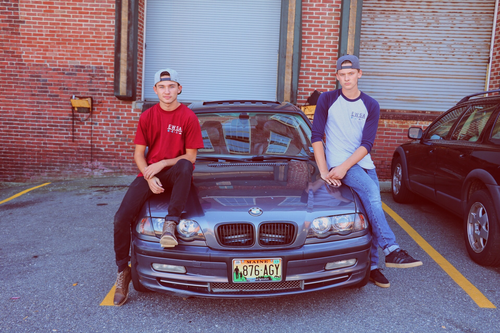
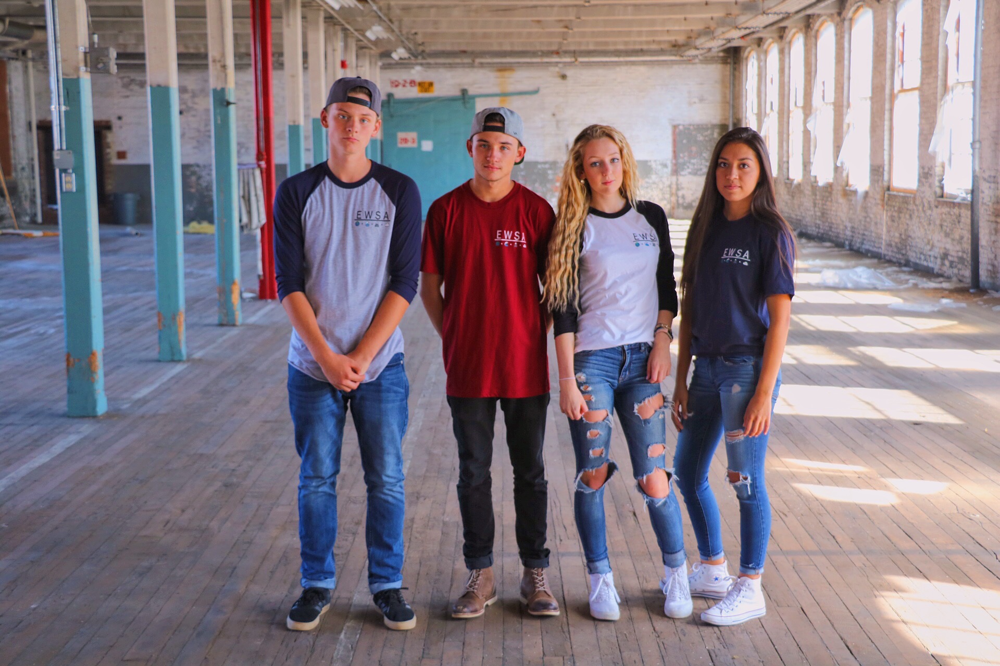

| Home | | | Jobs and Hobbies | | | Businesses | | | Goals | | | photographs |
At the age of 18 I have started 3 of my own companies and all 3 of them are still running today. One of them is called EWSA which stands for Earth - Water - Snow - Air It's a clothing company I started just under a year ago that I run on one of my instagram accounts which I'll talk about later down on this page. I made my own logo and the website and I'm the only one who works for it. I'm really happy to say I've done this and have experience starting my own business at this ago. Below are some pictures of a couple pictures that we took wearing the shirts.
|  |  |
My second business is the instagram account I mentioned earlier. It's all based on snowboarding and the username is @snowboarding.pics. I started it around a year and a half ago and currently at 43k followers. With an instagram account this high that specializes in a certain niche a lot of companies in that niche contact you to do promotions for them. So during the winter months I make pretty good money selling ads to companies and or receive free gear for posting their ad.
The last of them is a company called East Coast Kendama Co. is a small company with my friend that sells ancient Japanese toys called Kendama's. They are starting to become big again around the US so we started a business selling them which did really well throughout the summer when we did it.